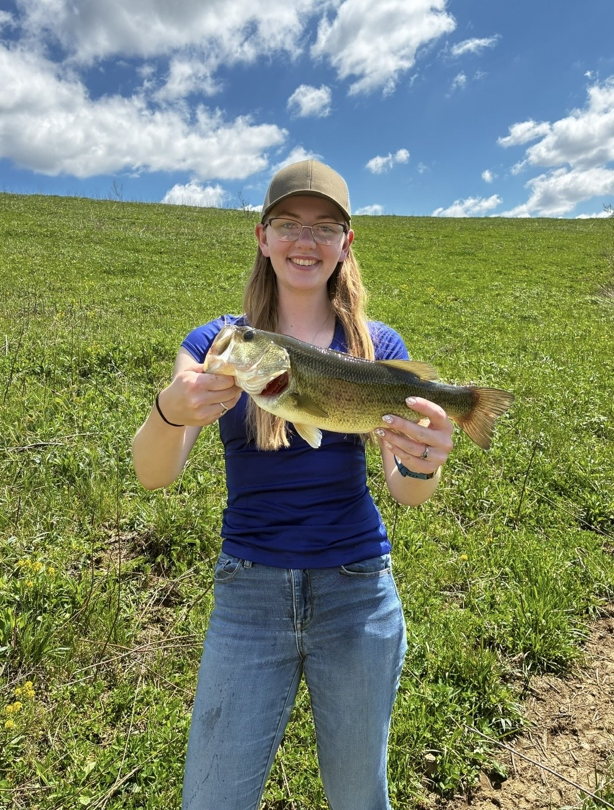

Behind the Canvas


Welcome! I’m so glad you’re here.
My name is Hayley Clark and my goal as an artist is simple: to capture the spirit of the wild, honor the memories of your faithful companions, and bring your most cherished outdoor moments back to life on canvas.
Where Science Meets Studio
For as long as I can remember, my life has been defined by two deep passions: art and the natural world. I began formally studying acrylic painting over a decade ago, falling in love with the vibrant colors, fine details, and rich textures the medium allows. But to truly paint nature, I knew I needed to understand it from the inside out.
That drive led me to earn my Bachelor’s Degree in Environmental Science with a focus on Conservation Biology. Understanding animal anatomy, habitat ecology, and light behavior in natural ecosystems isn't just an academic background for me—it's the foundation of every brushstroke. When I paint a wildlife scene or a pet, I'm drawing upon years of studying how nature actually works.
Bringing the Harvest Back to Life
As a devoted hunter, angler, and outdoorswoman, I hold a deep respect for the wildlife we pursue and the memories made in the field. One of my absolute favorite specialties is working with hunters to turn their harvests into dynamic, living portraits. Unlike a static mount on a wall, I revive your harvest in its natural, breathtaking element—recreating the crisp autumn morning, the dense timber, or the sunlit ridge where your story took place.
Whether it's a field memory, a wildlife encounter, a beloved hunting dog, or a cherished family pet, I take pride in creating heirloom-quality acrylic pieces that tell your story.
Thank you for stopping by and supporting my small business. I can’t wait to collaborate with you and bring your favorite outdoor memories to life!


Ready to Start Your Custom Piece?
Click below to fill out our commission request form with your size choices, details, and reference notes.
Open Commission Request Form